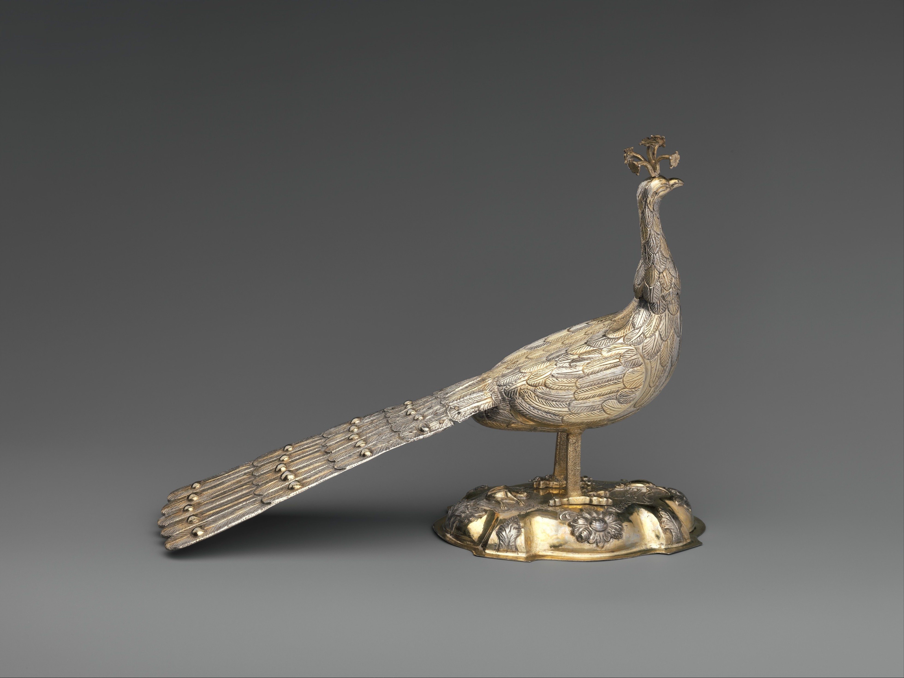

The date in the record
1791
(?)Possibly
Hungarian

Cup in the form of a peacock
Silver, partly gilded
The Metropolitan Museum of Art
17.190.574a, b
Not on view
The date in the record
Possibly
Hungarian

Cup in the form of a peacock
Silver, partly gilded
The Metropolitan Museum of Art
17.190.574a, b
Not on view